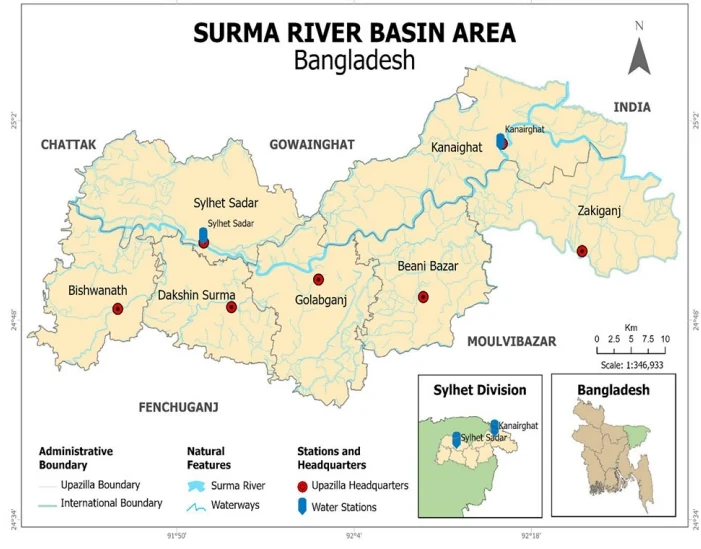
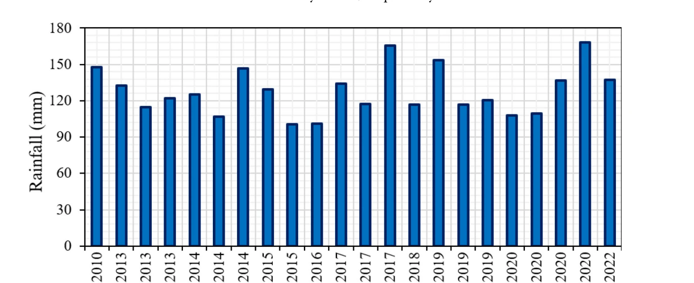
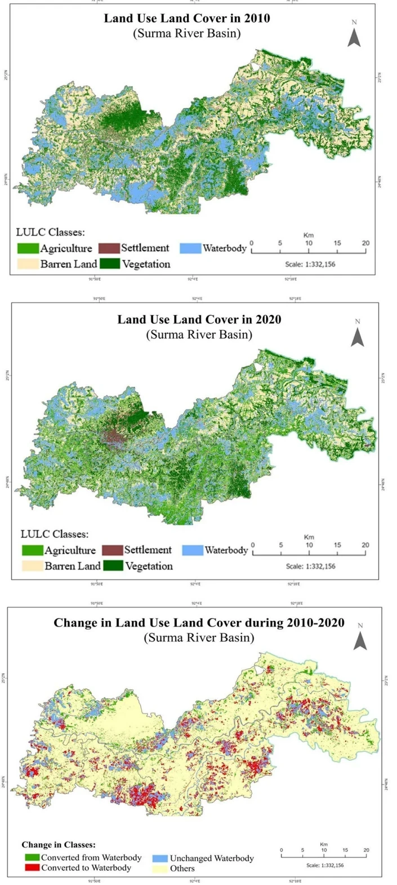

Most studies of Sylhet's floods isolate a single cause: rainfall, drainage, or development. This one shows the flood risk comes from the combination: upstream extreme rainfall arriving faster than a rapidly urbanizing, drainage-poor district can carry it away.
Bangladesh sits among the world's most flood-vulnerable countries, owing to its position in the Ganges-Brahmaputra-Meghna deltaic floodplains and high population exposure. The agro-economically important, haor-dominated Sylhet district in the north-east has faced devastating floods in recent decades, but the combined impact of climate-change-driven extreme rainfall and anthropogenic land use-land cover (LULC) change on flood susceptibility had not previously been assessed together; prior work examined each factor largely in isolation.
This study applies the generalized extreme value distribution to rainfall data to isolate the contribution of extreme rainwater to flood events, and uses Landsat ETM+ imagery with remote sensing and GIS techniques to quantify LULC change between 2010 and 2022. A public perception survey was layered on top to check the spatial analysis against residents' lived experience.



Treating rainfall and land use as separate flood-risk factors, as most prior Sylhet studies have, understates the actual hazard. This study's combined framing gives planners a more accurate basis for flood mitigation: managing drainage and development alongside rainfall monitoring, not instead of it.
This study received an Honorable Mention in the 2025 Case Studies in the Environment Prize Competition (University of California Press), which recognizes outstanding contributions published in the journal that year.
Prothom Alo (Bangladesh's largest-circulation Bengali daily) covered this study's finding of a decade of wetland loss in the Surma basin, reporting the same waterbody decline (23.4% of basin land in 2010 down to 19.51% in 2020) documented above, drawn from the joint SUST–Kagawa University research.